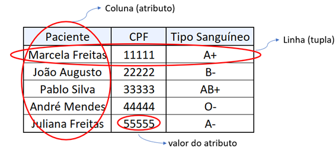
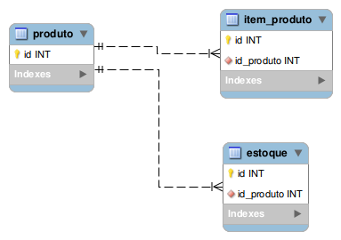
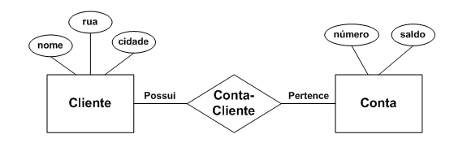
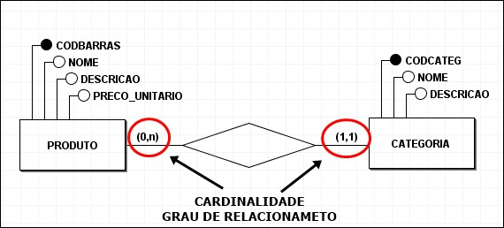
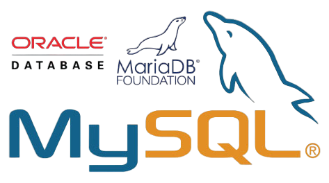
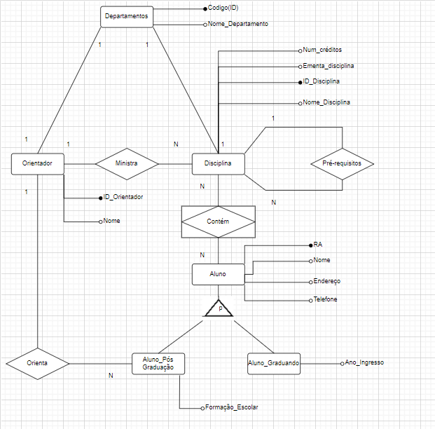

Continuamos com os estudos, adentrando no campo dos bancos de dados, compreendendo seu funcionamento, tipos, Modelos de Entidade Relacionamento (MER), Diagramas Entidade Relacionamento (DER), cardinalidade, e outros conceitos relacionados.
Durante o curso, exploramos a importância do Banco de Dados como uma estrutura física para armazenar informações por um período de tempo indeterminado. Para gerenciar um banco de dados, utilizamos sistemas específicos. Existem diversos tipos de bancos de dados, sendo o banco de dados relacional um dos mais comuns. Nesse tipo de banco, as informações são organizadas em tabelas compostas por linhas e colunas. Cada tabela representa uma entidade, como clientes, produtos ou pedidos, e as relações entre essas entidades são estabelecidas por meio de chaves primárias e estrangeiras.
 
Antes de começarmos a programar em SQL, dedicamos um tempo ao estudo da modelagem de dados. Nesse contexto, aprendemos sobre o diagrama MER (Modelo de Entidade Relacionamento), que é uma representação conceitual que descreve os objetos, suas características e seus relacionamentos. Também exploramos o diagrama DER (Diagrama Entidade Relacionamento), que é uma representação gráfica que mostra as entidades, atributos e relacionamentos entre elas. Estudamos a simbologia presente no diagrama DER e suas características. Em relação às entidades, identificamos dois tipos: entidades fortes, que possuem uma chave primária e existem independentemente de outras entidades, e entidades fracas, que dependem de outras entidades para existir e não têm chave primária.

No estudo da cardinalidade, que define como as entidades se relacionam, aprendemos sobre os três tipos: (1:1, 1:N, N:M). Também exploramos os relacionamentos fortes e fracos, que são determinados pela cardinalidade. Além disso, familiarizamo-nos com os Sistemas de Gerenciamento de Banco de Dados (SGBDs), que são softwares que permitem a criação, manipulação e administração de bancos de dados. Esses sistemas oferecem uma interface entre os usuários e o banco de dados, facilitando a criação, recuperação, atualização e exclusão de dados de forma eficiente e segura. Exemplos de SGBDs incluem Oracle, MySQL, SQL Server, PostgreSQL, entre outros.
 
Projetos desenvolvidos:
Tivemos a oportunidade de colocar em prática nossos conhecimentos ao desenvolver nosso próprio banco de dados, incluindo a criação de Modelos de Entidade Relacionamento (MER) e Diagramas Entidade Relacionamento (DER).
No primeiro projeto, cada squad da sala foi designada para resolver um dos exercícios propostos pelo professor durante as aulas. Em meu grupo, composto por Giovanni Menon, Diego Henrique, Rafael Mattos e Vítor Maia, ficamos responsáveis pela resolução do exercício número 6.
Para desenvolver nosso projeto, começamos criando um Modelo de Entidade Relacionamento (MER) e um Diagrama Entidade Relacionamento (DER). Esses modelos foram fundamentais para servir de base na criação do nosso próprio banco de dados, fornecendo uma estrutura sólida e coerente para o projeto.
No segundo projeto, a turma se uniu para normalizar um banco de dados contendo informações sobre o evento do Titanic. O objetivo era organizar e padronizar os dados de forma eficiente, seguindo as melhores práticas de modelagem de banco de dados.
Clique aqui para ver o projeto